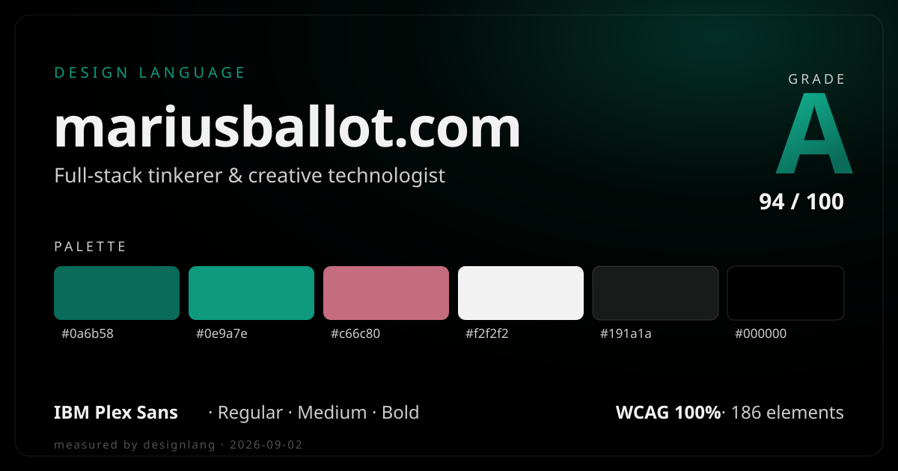

Portfolio of a full-stack tinkerer working across web, 3D graphics, robotics and ML/AI. The site is near-black and flat: off-white IBM Plex Sans on true black, a single teal-to-emerald brand gradient, and pill-shaped controls at a 100px radius.

Seven weighted categories, measured across 186 elements. Six sit at a perfect 100; CSS tokenization is the only deduction.
A tight, low-saturation system (avg saturation 0.16): true black and near-black grounds, off-white text, one teal brand gradient, and a dusty-rose secondary. Counts are measured usage across 186 elements.
One typeface does everything: IBM Plex Sans at three weights (400 / 500 / 700). The measured DOM scale is compact (three sizes), typical of a canvas and scroll-animated Svelte portfolio where headline type is drawn outside the DOM. Rendered at measured sizes.
A 4px base unit. Measured steps from 4 to 64px, with flex gaps at 8 / 12 / 16 / 32. Layout is flex-only (0 grid, 14 flex containers); one breakpoint at 700px; every rounded control is a 100px pill.
One duration token, scroll-linked. Motion is JS and canvas-driven, so no CSS easing curves or keyframe tokens were captured.
transitions on width & left at 0.2s, plus transition: all · no CSS cubic-bezier easing or @keyframes measured — motion runs through Svelte / canvas.
What holds the grade back, and what to keep. The only deduction is CSS tokenization (50/100); everything visual scores 100.
rgba(0,0,0,0.4) 5px 5px 15px), one 45° teal gradient, white on #191a1a at 17.44:1 (AAA). Accessibility 100/100, though scored on a small 2-pair sample given the canvas-heavy DOM.